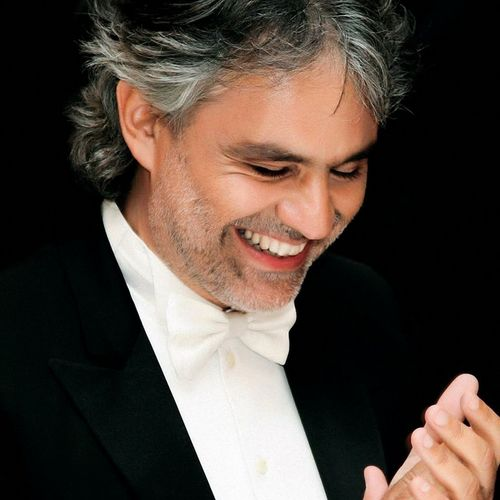

Música italiana pelo mundo
Andrea Bocelli
Andrea Bocelli vem de uma região da Toscana onde se produz um chianti muito apreciado na Itália. Ele nasceu numa fazenda de vinicultores de Lajatico, em 22 de setembro de 1958, lugar que descreve com riqueza de detalhes sempre que perguntado sobre suas lembranças mais remotas. A música o acompanhou desde pequeno, começou a ter as aulas de piano aos seis anos de idade, depois aprendeu flauta e saxofone, e embora tivesse problemas de visão, teria escapado à cegueira não fosse uma violenta pancada na cabeça durante um jogo de futebol. Andrea tinha 12 anos quando sofreu hemorragia cerebral, ele diz que foi o apoio da famàlia que o fez encarar a tragédia com tranqà¼ilidade para voltar a estudar música. Enquanto os garotos da mesma idade ouviam o alucinado rock & roll, Andrea deleitava-se com o lirismo das operetas, um prazer que passou ao segundo plano quando ele ingressou na Universidade de Pisa, onde se formou em Direito no final dos anos 70. Recém formado, trabalhou como defensor público até conhecer seu futuro professor de canto, o tenor Franco Carelli. Para pagar o curso, Andrea começou a se apresentar em bares e clubes noturnos cantando ao piano e foi numa dessas apresentações que conheceu Enrica, a esposa que lhe deu dois filhos. A oportunidade que mudou sua vida aconteceu em 1992, quando o bluseiro Zucchero Fornaciari iniciou uma bateria de testes para encontrar o tenor com quem dividiria os vocais de 'Miserere', canção escrita em parceria com Bono Vox, o vocalista da banda U2. Na época, correu o boato que o roqueiro queria mesmo era atrair Luciano Pavarotti, mas teria ficado impressionado com o teste de Bocelli. Pavarotti recebeu uma cópia desta fita e deve ter ficado igualmente tocado, já que preferiu abdicar do dueto e gravar a sua própria versão "” o que não impediu o mundo de preferir a 'Miserere' na voz do novato. Durante a turnê européia de Zucchero, Bocelli cantou em dueto e ainda apresentou-se sozinho em todos os shows. Também cantou na festa de aniversário do amigo, onde recebeu uma proposta irrecusável da presidente da Sugar Records, Caterina Caselli. Contudo, a dimensão de seu talento pôde ser comprovada antes de seu primeiro álbum entrar no mercado. Ele venceu o Festival de San Remo de 1994 com a canção 'Il Mare Calmo Della Sera', música que virou faixa-título do álbum e uma das favoritas do Top 10 italiano, recebendo um merecido disco de platina. Já em 1996, Bocelli foi convidado por Sarah Brightman para um dueto na cerimônia de abertura da luta de despedida do pugilista alemão Henry Maske, cantaram a versão em inglês de 'Con Te Partiró'. Maske perdeu a luta para o norte-americano Virgil Hill, deixando o ringue ao som de 'Time to Say Goodbye'. Andrea Bocelli ganhou o mundo: com acompanhamento da Sinfônica de Londres, a canção conquistou o primeiro lugar na parada alemã, com mais de 6 milhões de cópias vendidas e seis discos de platina. No mesmo ano saiu Romanza, uma coletânea de sucessos que inclui o dueto com a brasileira Sandy, em 'Vivo Por Ella'. E, de lá pra cá, outros duetos vieram: com Céline Dion, Eros Ramazzoti, Dulce Pontes, Luciano Pavarotti, Nuccia Focile... Em 1999, durante uma entrevista concedida em São Paulo, pediram uma explicação para tantos cantores desejarem gravar com ele, Bocelli sorriu. "É provável que eles sintam o quanto eu gosto de cantar com outras pessoas. É muito mais divertido cantar acompanhado do que sozinho." Em 2002, Andrea repetiu a turnê (excursão) pela América, ganhando dois "World Music Awards". Desde então, Andrea continuou a carreira com aparições em concertos no mundo inteiro, cantando inclusive durante o All-Star Weekend da NBA de 2006 em Houston, Texas. Cantou "Because We Believe" ("Porque Nós Acreditamos"), do seu álbum Amore (lançado em 2006), na cerimônia de encerramento das Jogos Olàmpicos de Inverno de 2006 em Turim, Itália. Em 2006, Bocelli trabalhou com os seis finalistas do programa de televisão American Idol, ajudando-os a cantar as canções escolhidas segundo o tema da semana: "classic love songs" (músicas românticas clássicas).